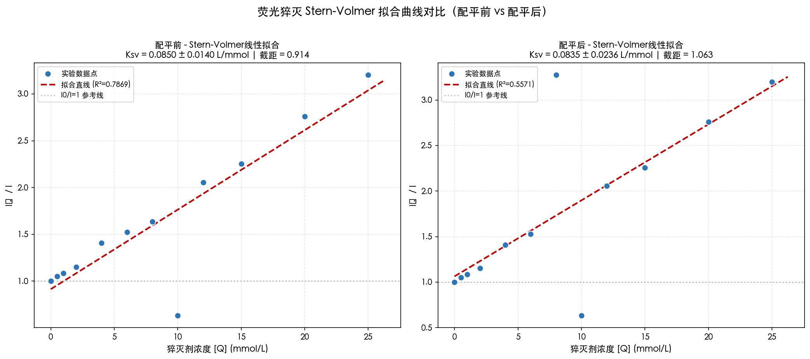
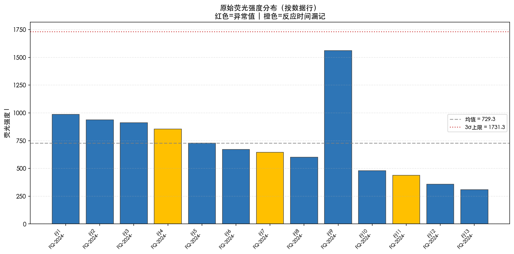
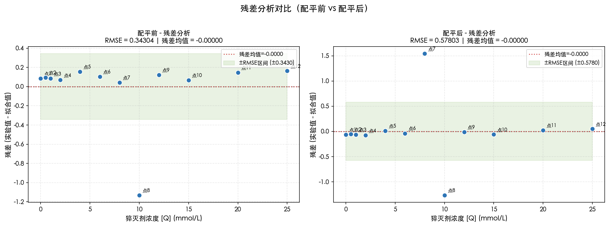
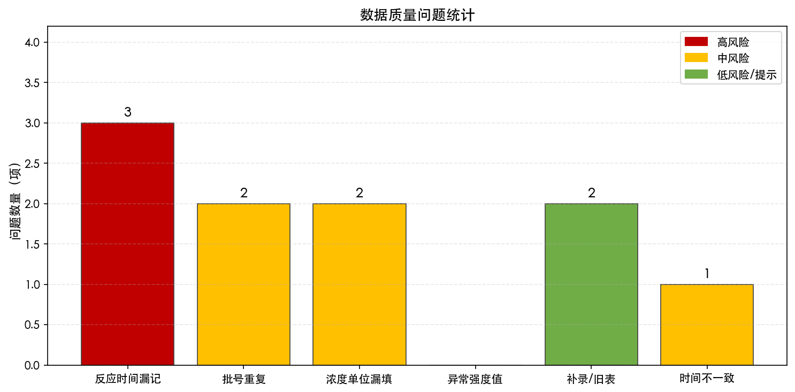
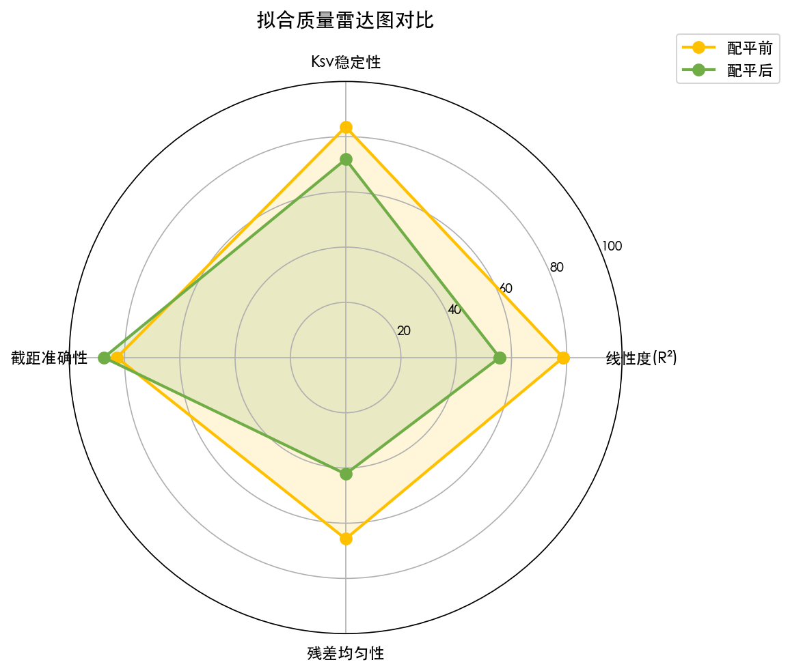

本批数据共检测到安全隐患 11 项 （高风险3、中风险5、低风险2）。 配平前后判定一致（不合格 - 需重新检测）。 反应时间漏记问题记录如下： - 材料【异硫氰酸荧光素】批号【FQ-2024-0316-A】(行[4]) - 材料【罗丹明B】批号【FQ-2024-0317-A】(行[7]) - 材料【罗丹明6G】批号【FQ-2024-0319-A】(行[11]) 批号重复问题记录如下： - 材料【异硫氰酸荧光素】批号【FQ-2024-0315-A】重复记录 - 材料【异硫氰酸荧光素】批号【FQ-2024-0316-B】重复记录
拟合结果：Ksv = 0.0835 ± 0.0236 L/mmol | R² = 0.5571 | 最终判定：不合格 - 需重新检测
安全风险提示：共 11 项（高风险 3 项 / 中风险 5 项），详见下方安全分析部分。
| 风险 | 类别 | 批号 | 材料 | 行号 | 问题说明 |
|---|---|---|---|---|---|
| 高风险 | 反应时间漏记 | FQ-2024-0316-A | 异硫氰酸荧光素 | 4 | 材料【异硫氰酸荧光素】的第4行记录缺少反应时间。荧光猝灭反应时间直接影响I0/I比值准确性，漏记将导致拟合结果不可靠。 |
| 高风险 | 反应时间漏记 | FQ-2024-0317-A | 罗丹明B | 7 | 材料【罗丹明B】的第7行记录缺少反应时间。荧光猝灭反应时间直接影响I0/I比值准确性，漏记将导致拟合结果不可靠。 |
| 高风险 | 反应时间漏记 | FQ-2024-0319-A | 罗丹明6G | 11 | 材料【罗丹明6G】的第11行记录缺少反应时间。荧光猝灭反应时间直接影响I0/I比值准确性，漏记将导致拟合结果不可靠。 |
| 中风险 | 批号重复 | FQ-2024-0315-A | 异硫氰酸荧光素 | 1, 2 | 批号【FQ-2024-0315-A】在原始数据中出现2次，涉及浓度值: [0.0, 0.5]。系统已自动按浓度取均值处理，但需人工确认是否为平行样或录入错误。涉及材料: 异硫氰酸荧光素 |
| 中风险 | 批号重复 | FQ-2024-0316-B | 异硫氰酸荧光素 | 5, 6 | 批号【FQ-2024-0316-B】在原始数据中出现2次，涉及浓度值: [4.0, 4.0]。系统已自动按浓度取均值处理，但需人工确认是否为平行样或录入错误。涉及材料: 异硫氰酸荧光素 |
| 中风险 | 单位漏填 | FQ-2024-0315-B | 异硫氰酸荧光素 | 3 | 材料【异硫氰酸荧光素】的第3行缺少浓度单位。已假定单位为 mmol/L，如实际不同将严重影响Ksv值量纲。 |
| 中风险 | 单位漏填 | FQ-2024-0319-B | 罗丹明6G | 12 | 材料【罗丹明6G】的第12行缺少浓度单位。已假定单位为 mmol/L，如实际不同将严重影响Ksv值量纲。 |
| 低风险 | 补录/旧表数据 | FQ-2024-0316-A | 异硫氰酸荧光素 | 4 | 第4行数据标记为【补录，昨天仪器记录丢失】。补录数据的原始记录追溯性可能不足，建议在纸质档案中确认原始数据。 |
| 低风险 | 补录/旧表数据 | FQ-2024-0319-B | 罗丹明6G | 12 | 第12行数据标记为【旧表，单位后续补上】。补录数据的原始记录追溯性可能不足，建议在纸质档案中确认原始数据。 |
| 中风险 | 反应时间不一致 | FQ-2024-0317-B | 罗丹明B | 8 | 材料【罗丹明B】第8行反应时间为30.0min，与大多数记录的15.0min不符。已在配平计算中按时间比例校正，但建议人工复核原始记录。 |
| 提示 | 多材料混合 | 异硫氰酸荧光素, 罗丹明B, 罗丹明6G | 本批数据包含 3 种材料: 异硫氰酸荧光素, 罗丹明B, 罗丹明6G。已合并拟合。如需分别拟合请按材料拆分后重新运行。 |
【反应时间漏记】— 卡在哪份材料？
【批号重复】— 卡在哪份材料？
表格中已用不同颜色和标签标记各类数据问题，方便逐行核对。
| 行号 | 序号 | 样品批号 | 材料名称 | 猝灭剂浓度 | 单位 | 荧光强度 | 反应时间 | 时间单位 | 备注 | 质量标记 |
|---|---|---|---|---|---|---|---|---|---|---|
| 1 | 1 | FQ-2024-0315-A | 异硫氰酸荧光素 | 0.0 | mmol/L | 985.9605698361348 | 15.0 | min | — | 批号重复 |
| 2 | 2 | FQ-2024-0315-A | 异硫氰酸荧光素 | 0.5 | mmol/L | 938.3887900166412 | 15.0 | min | 重复检测 | 批号重复 |
| 3 | 3 | FQ-2024-0315-B | 异硫氰酸荧光素 | 1.0 | — | 910.9980689088212 | 15.0 | min | — | 缺单位 |
| 4 | 4 | FQ-2024-0316-A | 异硫氰酸荧光素 | 2.0 | mmol/L | 855.883195883734 | — | min | 补录，昨天仪器记录丢失 | 缺反应时间 补录/旧表 |
| 5 | 5 | FQ-2024-0316-B | 异硫氰酸荧光素 | 4.0 | mmol/L | 728.5334430854094 | 15.0 | min | — | 批号重复 |
| 6 | 6 | FQ-2024-0316-B | 异硫氰酸荧光素 | 4.0 | mmol/L | 670.2507676385767 | 15.0 | min | 平行样 | 批号重复 |
| 7 | 7 | FQ-2024-0317-A | 罗丹明B | 6.0 | mmol/L | 646.1969790331661 | — | — | — | 缺反应时间 |
| 8 | 8 | FQ-2024-0317-B | 罗丹明B | 8.0 | mmol/L | 602.2838871194219 | 30.0 | min | — | ✓ 正常 |
| 9 | 9 | FQ-2024-0318-A | 罗丹明B | 10.0 | mmol/L | 1560.0 | 15.0 | min | — | ✓ 正常 |
| 10 | 10 | FQ-2024-0318-B | 罗丹明B | 12.0 | mmol/L | 479.5148222202657 | 15.0 | min | — | ✓ 正常 |
| 11 | 11 | FQ-2024-0319-A | 罗丹明6G | 15.0 | mmol/L | 437.2799512922623 | — | min | — | 缺反应时间 |
| 12 | 12 | FQ-2024-0319-B | 罗丹明6G | 20.0 | — | 357.4019506492134 | 15.0 | min | 旧表，单位后续补上 | 缺单位 补录/旧表 |
| 13 | 13 | FQ-2024-0319-C | 罗丹明6G | 25.0 | mmol/L | 308.0112429571569 | 15.0 | min | — | ✓ 正常 |
| 参数 | 配平前 | 配平后 |
|---|---|---|
| 拟合方法 | Stern-Volmer线性拟合 | Stern-Volmer线性拟合 |
| 参与拟合点数 | 12 | 12 |
| Ksv (L/mmol) | 0.084955 ± 0.013980 | 0.083539 ± 0.023556 |
| Ksv变化 | — | -0.001416 (-1.67%) |
| 截距 | 0.9139 ± 0.0060 | 1.0626 ± 0.0102 |
| 相关系数 R² | 0.786921 | 0.557067 |
| 调整 R² | 0.765613 | 0.512773 |
| 均方根误差 RMSE | 0.343038 | 0.578033 |
| R²变化 | — | -0.229854 |
| I0 估计值 | 985.96 | 985.96 |
| 质量判定 | 不合格 - 需重新检测 | 不合格 - 需重新检测 |

图1：配平前后Stern-Volmer拟合对比。异常点（红色×）、时间漏记（橙色△）、补录（绿色◇）均已在图中标出。

图2：各数据行的原始荧光强度柱状图。红色为异常值、橙色为反应时间漏记记录。灰色虚线为均值和3σ控制线。

图3：配平前后残差分布对比。绿色区域为±RMSE区间，理想情况下残差应随机分布在0附近。

图4：数据质量各类问题数量统计。红色为高风险、橙色为中风险。

图5：拟合质量四维雷达图。绿色（配平后）越往外越好。
──────────────────────────────────────────────────────────── 拟合方法: Stern-Volmer线性拟合 ──────────────────────────────────────────────────────────── Stern-Volmer猝灭常数 Ksv = 0.084955 ± 0.013980 (L/mmol) 截距 = 0.9139 ± 0.0060 I0 (空白荧光强度) = 985.96 相关系数 R² = 0.786921 调整 R² = 0.765613 均方根误差 RMSE = 0.343038 参与拟合点数 = 12 【拟合警告】 ⚠ R²=0.7869，线性相关性较弱，建议检查数据或考虑非线性模型 ⚠ 批号 [FQ-2024-0315-A] 有重复记录，已按浓度取均值并入拟合。涉及行: [1, 2]
──────────────────────────────────────────────────────────── 拟合方法: Stern-Volmer线性拟合 ──────────────────────────────────────────────────────────── Stern-Volmer猝灭常数 Ksv = 0.083539 ± 0.023556 (L/mmol) 截距 = 1.0626 ± 0.0102 I0 (空白荧光强度) = 985.96 相关系数 R² = 0.557067 调整 R² = 0.512773 均方根误差 RMSE = 0.578033 参与拟合点数 = 12 【拟合警告】 ⚠ R²=0.5571，线性相关性较弱，建议检查数据或考虑非线性模型 ⚠ 批号 [FQ-2024-0315-A] 有重复记录，已按浓度取均值并入拟合。涉及行: [1, 2]
============================================================ 数据质量检查报告 ============================================================ 总记录数: 13 【警告】反应时间漏记 (3 条): → 第4行 | 批号: FQ-2024-0316-A | 材料: 异硫氰酸荧光素，备注: 补录，昨天仪器记录丢失 → 第7行 | 批号: FQ-2024-0317-A | 材料: 罗丹明B，备注: nan → 第11行 | 批号: FQ-2024-0319-A | 材料: 罗丹明6G，备注: nan 【警告】批号重复 (2 组): → 批号 FQ-2024-0315-A 出现 2 次, 行号: [1, 2], 浓度: [0.0, 0.5] → 批号 FQ-2024-0316-B 出现 2 次, 行号: [5, 6], 浓度: [4.0, 4.0] 【警告】浓度单位漏填 (2 条): → 第3行 | 批号: FQ-2024-0315-B | 材料: 异硫氰酸荧光素，备注: nan → 第12行 | 批号: FQ-2024-0319-B | 材料: 罗丹明6G，备注: 旧表，单位后续补上 【提示】补录/旧表数据 (2 条): → 第4行 | 批号: FQ-2024-0316-A | 备注: 补录，昨天仪器记录丢失 → 第12行 | 批号: FQ-2024-0319-B | 备注: 旧表，单位后续补上 【警告】反应时间不一致 (1 条): → 第8行 | 批号: FQ-2024-0317-B | 当前: 30.0min, 标准: 15.0min 【提示】混合材料检测: → 检测到 3 种材料: 异硫氰酸荧光素, 罗丹明B, 罗丹明6G 问题总数: 7 处 ============================================================